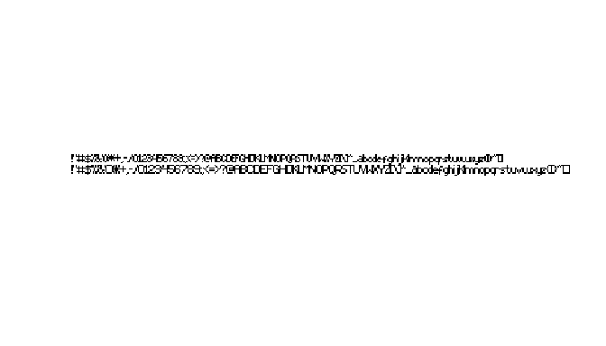

The Amiga File Format Handler package (AmigaFFH) is designed to interpret file formats that were native to Commodore Amiga machines. In combination with the adfExplorer package this package can be used to interpret older file formats that were native to the Commodore Amiga. The focus of this package will be on the older system (Amiga OS <= 3.0). This will allow you to analyse and interpret these files in the scripted environment of R.
In the sections below there are some prominent examples of supported file formats. For a more detailed overview, please consult the package documentation (?AmigaFFH)
Installation
Get CRAN version
install.packages("ProTrackR")Get development version from R-Universe
install.packages("ProTrackR", repos = c('https://pepijn-devries.r-universe.dev', 'https://cloud.r-project.org'))Usage
Below there are some ultra-short demostrations of a selection of supported Amiga file types
IFF
The Interchange File Format (IFF) is and was a file container that could hold any kind of data. Below is an example of a bitmap image stored as such a file.
AmigaBasic
AmigaBasic is a simple interpreted programming language for the early Commodore Amiga’s. Its code was stored in a binary format to save disk and memory space. Below an example of how to read such a file.
system.file("demo.bas", package = "AmigaFFH") |>
read.AmigaBasic()
#> OPEN "ball.shp" FOR INPUT AS 1
#> OBJECT.SHAPE 1,INPUT$(LOF(1),1)
#> CLOSE 1
#> OBJECT.X 1,320
#> OBJECT.Y 1,127
#> OBJECT.ON 1
#> OBJECT.START
#> LET t=0
#> PRINT "Press any key to continue..."
#> WHILE INKEY$ =""
#> OBJECT.X 1, 320+200*SIN(t)
#> OBJECT.Y 1, 127+100*COS(t)
#> t=t+.001
#> WEND
#> SCREEN 1,320,256,3,1
#> WINDOW 1,"Bob Window",(0,0)-(297,242),31,1
#> PALETTE 0,1,1,1
#> PALETTE 1,.1333333,.4,.7333333
#> PALETTE 2,.2,.4,.7333333
#> PALETTE 3,.2666667,.4666667,.6666667
#> PALETTE 4,.4666667,.5333333,.6
#> PALETTE 5,.6,.6,.6
#> PALETTE 6,.6666667,.6666667,.6666667
#> PALETTE 7,.7333333,.7333333,.7333333
#> FOR i% = 0 TO 7
#> COLOR i%
#> AREA (i%*10, 30)
#> AREA STEP (10, 0)
#> AREA STEP (0, 10)
#> AREA STEP (-10,0)
#> AREAFILL
#> NEXT i%
#> OPEN "r_logo.shp" FOR INPUT AS 1
#> OBJECT.SHAPE 2,INPUT$(LOF(1),1)
#> CLOSE 1
#> OBJECT.X 2,160
#> OBJECT.Y 2,127
#> OBJECT.ON 2
#> PRINT "Press any key to stop..."
#> WHILE INKEY$=""
#> OBJECT.X 2, 160+100*SIN(t*.3)
#> OBJECT.Y 2, 127+50*COS(t)
#> t=t+.01
#> WEND
#> SCREEN CLOSE 1
#> ENDAmiga File Icons
On the Amiga, file icons were stored as separate files. Below an example of how to create such a file.
icon <- simpleAmigaIcon()
plot(icon, interpolate = FALSE)Amiga Fonts
The Commodore Amiga used bitmap fonts to display texts. The package comes with an example object that can be stored as an Amiga Font file.

System configuration
The systemconfiguration file was used to store some system preferences (screen resolution, font, default printer, etc.). It was loaded during the boot process. The exaple below shows how to create such a file.
simpleSysConfig()
#> Amiga system-configuration
#> FontHeight: 8
#> Printer: parallel generic
#> Interlaced: FALSEDevelopmental status
It has been years since the initial release of this package. Since it’s release a lot has changed in R and in my skill set. I still have plans for this package, but this requires drastic changes. Therefore, I will only apply minimal maintenance to this package. Meanwhile I will work on a complete overhaul which will be released in due time as a new package. This new package will:
- have the same or similar features as the current package.
- implement rendering procedures in C++ giving the package a speed boost.
But until then, please enjoy the current package as is.